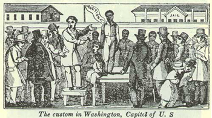
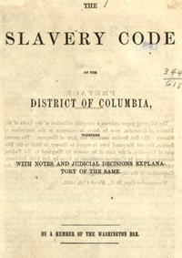

|

A slave auction in Washington, D.C.
|
From its origins in 1791 by an act of Congress, to April 1862, the District of
Columbia contained a substantial slave community. The federal census of 1800
reported 3,244 slaves in the District, a slave population that grew to 6,277
bondsmen in the 1820 enumeration. The slave schedules of 1850 and 1860 indicate
that Washington masters owned an average of five slaves. Those masters holding
more than fifteen bondsmen lived primarily on farms in the county of Washington.
Most slaves in the District, however, labored at skilled or semi-skilled
jobs--as domestic servants, upholsterers, nurses, chamber maids, carpenters,
houseboys and room servants, teamsters, carriage drivers, and cooks. Some lived
apart from their masters and hired their own time.
By 1860 the District's slave population had declined to 3,185 bondsmen. This
reduction resulted largely from private manumissions. Abolitionists and
|

Washington had a complicated and extensive set of laws
governing slavery.
|
colonizationists long had targeted the District as fertile ground for
emancipation. How, they asked, could the United States profess democratic values
to the world, all the while trading slaves within earshot of the nation's
capital buildings. In the 1840s Whigs, most notably Congressman Abraham Lincoln,
introduced legislation aimed at the gradual freeing of Washington slaves. It
failed. The Compromise of 1850 restricted--but did not outlaw--the slave trade
in the District. Unlike slave states in the lower South, manumission by will or
deed never was outlawed in the District.
As a result of these forces, the free black population of the District rose
from 783 in 180O, to 11,131 in 1860. Some free blacks purchased and,
subsequently, manumitted their relatives. Absalom Shadd, for example, emerged as
a prominent free black businessman, owning three bondsmen in 1850. Compensated
emancipation in the District finally was enacted by Congress on April 16, 1862.
It allocated a maximum of $1 million to compensate loyal slaveholders in the
District. The Lincoln administration hoped to resettle these blacks beyond the
United States. Over 3,000 blacks ultimately were freed in the nation's capital.
Compensations per slave averaged $300.
Source: Randall M. Miller and John David Smith, eds. Dictionary of
Afro-American Slavery (Westport, CT: Praeger, 1997), 192-93.
|